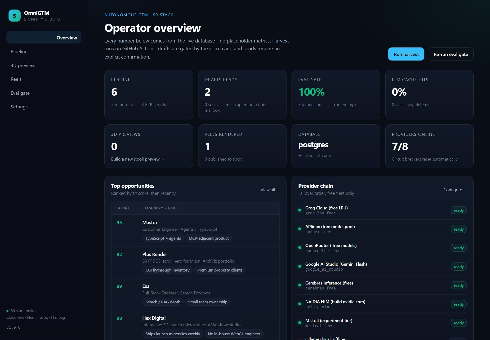

Open source · zero-budget infrastructure
Your GTM engine
shouldn't cost
$580 a month.
OmniGTM polls seven ATS sources directly, scores fit, drafts outreach and renders 60 FPS video reels — on free tiers, with no enrichment credits and no per-seat SaaS.

frame 0001 · scroll to scrub · 480-frame sequence, 120 keyframes
What actually runs
Four loops, one repository.
-
01
Harvest
Greenhouse, Lever, Ashby, Workable, SmartRecruiters, Recruitee and Personio boards are fetched directly. No aggregator, no credit meter.
-
02
Score and draft
A heuristic scorer shortlists, then a provider chain — Groq, APIinex, OpenRouter, Gemini, Cerebras, NIM, Mistral, Ollama, or your own gateway — writes the draft. Rate limits fail over in under 400 ms.
-
03
Render
FFmpeg turns a script into a 9:16 reel and an 8-second clip into 480 progressive WebP frames. The viewer scrubs them on canvas; there is no Three.js bundle to download.
-
04
Publish and prove
Outreach is confirm-gated and dry-run by default. Every release is checked by a seven-dimension eval gate: secret fallbacks, 429 failover, citation fidelity, redaction, voice card, idempotency.
The bill
Every line item is a free tier.
No trials that expire, no cards on file. Swap any row for a self-hosted equivalent.
| Layer | Service | Free allowance | Cost |
|---|---|---|---|
| Inference | Groq · APIinex · OpenRouter · Gemini · Cerebras · NIM · Mistral | Daily request caps, chained with failover | $0 |
| Custom gateway | FreeLLMAPI / LiteLLM / vLLM | Bring your own OpenAI-compatible endpoint | $0 |
| Database | Neon Postgres | 0.5 GB, autosuspend | $0 |
| Compute | Render Docker | 750 h/month, FFmpeg included | $0 |
| CI + scheduler | GitHub Actions | 2,000 min/month | $0 |
| Static hosting | Vercel · GitHub Pages | 100 GB bandwidth | $0 |
| Brevo | 300 messages/day | $0 | |
| Video | FFmpeg | Local binary, no API | $0 |
Three commands
Run it yourself.
Node 22 and FFmpeg are the only prerequisites. SQLite is the default store;
set DATABASE_URL and the same code uses Postgres.
# clone and install
git clone https://github.com/Warriorlegacy/signhify-omnigtm
cd signhify-omnigtm && npm install
# migrate, then run the dashboard
npm run db:migrate
npm run dev
# or drive it over MCP
npm run mcpThe stack is the argument.
Harvest, score, render and publish without renting a growth platform.